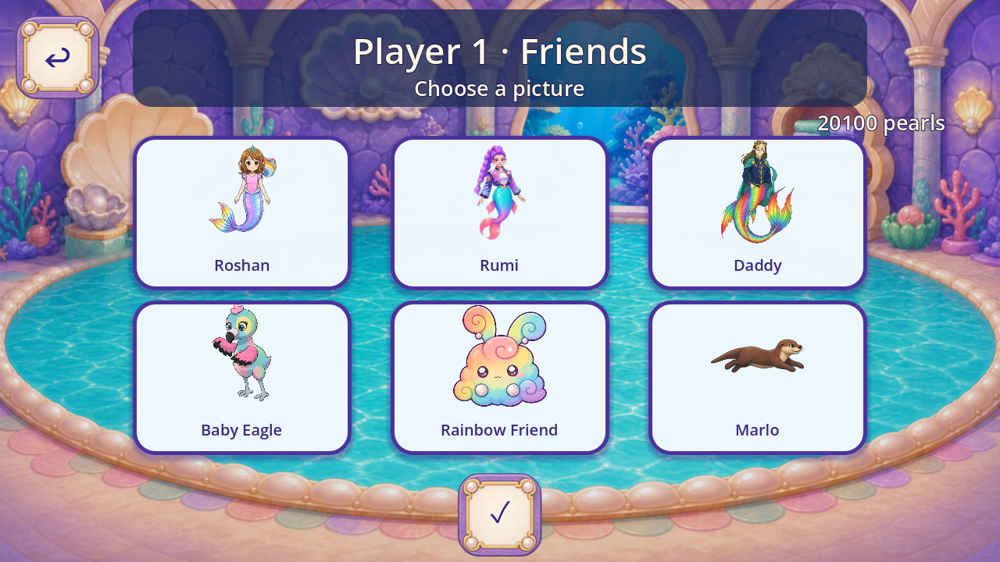
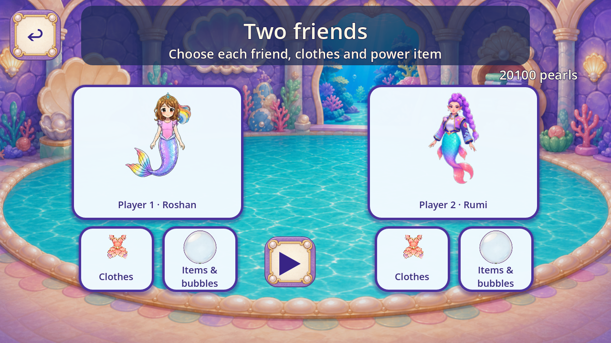
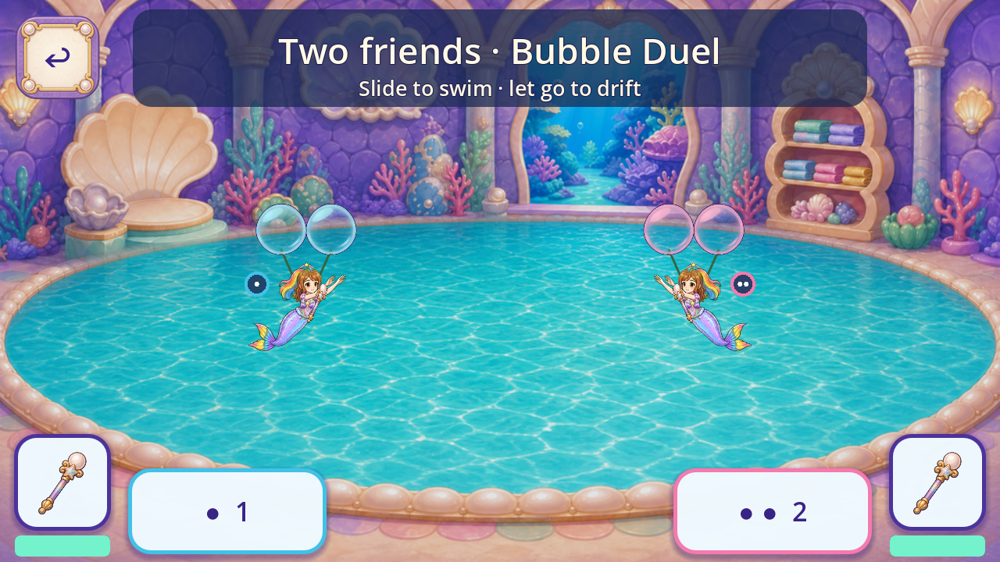
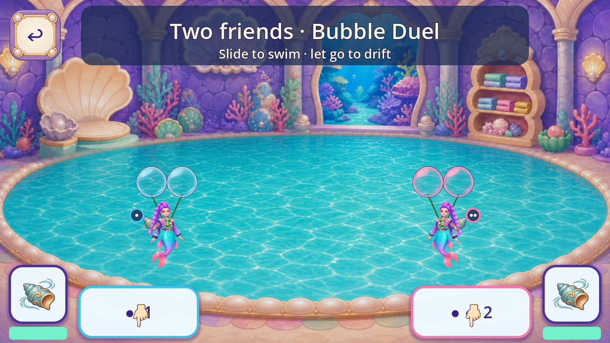
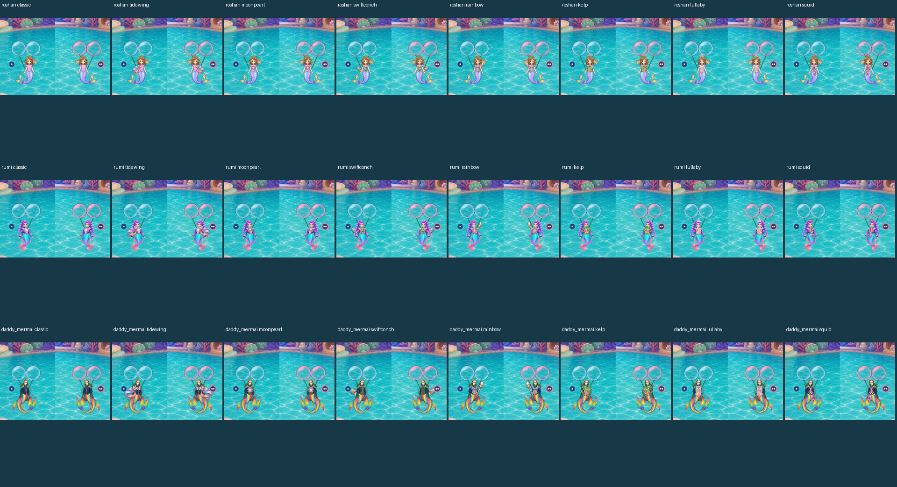
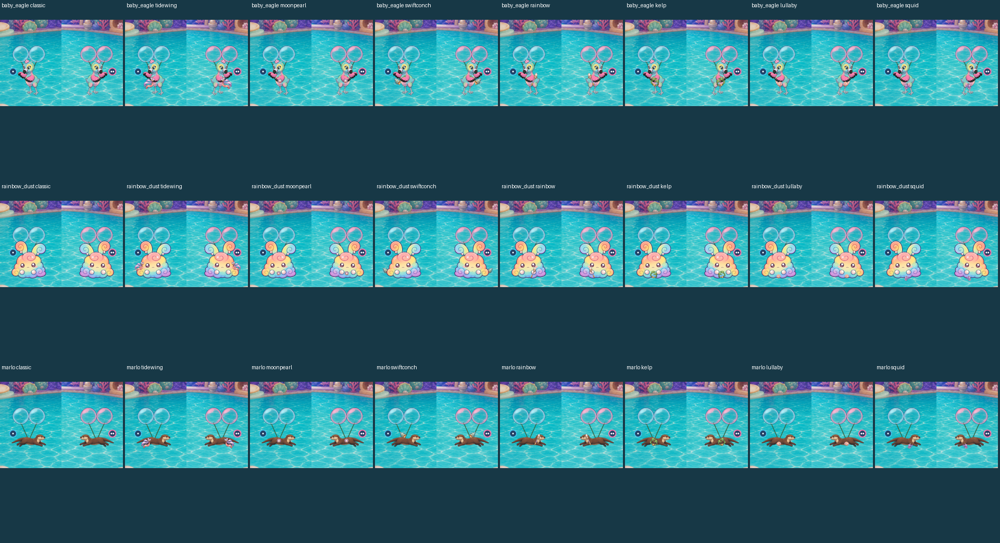
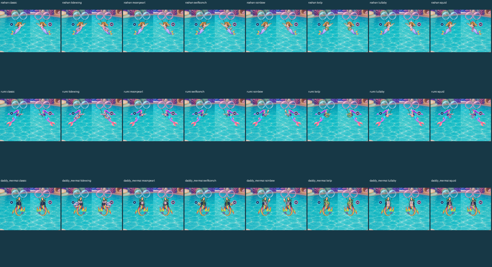
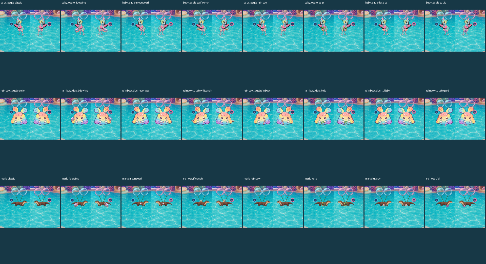
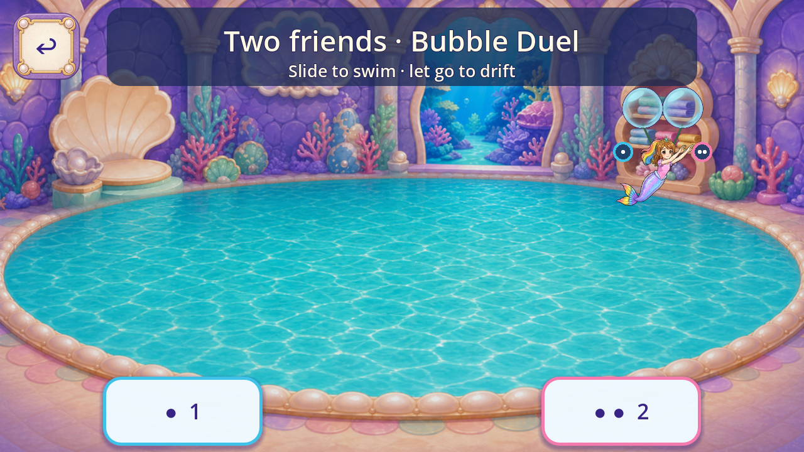

Marlo is an optional friend. Both players choose independently from shared unlocked characters, clothes, powers and bubble colours. Original purchases and saved progress are retained.
Candidate desktop appearance review: every listed illustration role has a minimum provisional4.6/5. This is not a master-audit pass. Background native coverage, font authority, formal QA11, motion, mobile performance, child and owner acceptance remain open.
Source reuse, corrections and limits · 48 individual character/item score records · 100 both-active bouts /3283 checks · 100 per-slot bouts /3183 checks · Original100 /1737 checks








